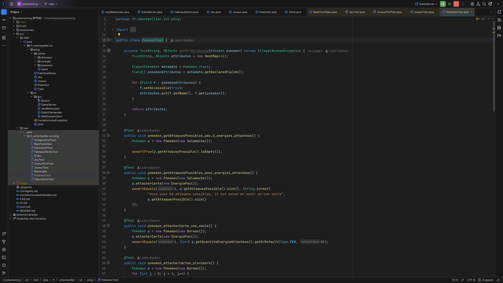
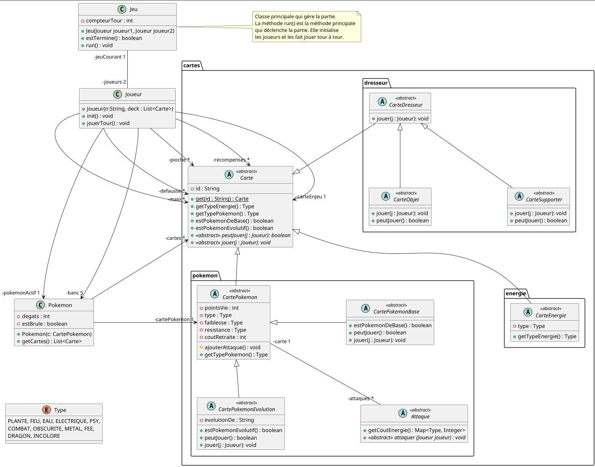

This project aimed to re-implement the Pokémon Trading Card Game in Java and was developed in an academic context.
Its main goal was to learn how to implement user interfaces in Java,
as well as how to apply Unit Testing and common Design Patterns effectively.
Abstract Factory: The Carte class provides a static method get(id)
to create cards based on their type and identifier.
Builder: The CartePokemon and Attaque classes are built step by step
using methods to configure their attributes.
Strategy: Different Pokémon attacks implement the Attaque interface,
allowing the attack behavior to change dynamically.
Composite: Joueur and Pokemon contain collections of cards
and attacks that are handled uniformly.
Template Method: CartePokemonBase and CartePokemonEvolution
define abstract methods jouer() and peutJouer() that subclasses implement.

We used unit tests throughout the project to make sure the game worked correctly. I focused on testing the core mechanics, card interactions, and player actions. Writing and running these tests helped us catch bugs early and gave me confidence that the system behaved as expected while developing new features.
The user interface was developed using JavaFX, providing opportunities to experiment with layout management, event handling, and scene control. This work allowed for creating an interactive and visually organized application while maintaining clean code structure and responsiveness. It was a great way to apply practical knowledge of JavaFX and user interface design.

The project included a UML diagram to guide students through the development process. In parallel, classes on UML and software design provided practical experience in creating and interpreting diagrams, helping to better plan and understand the structure of the application.